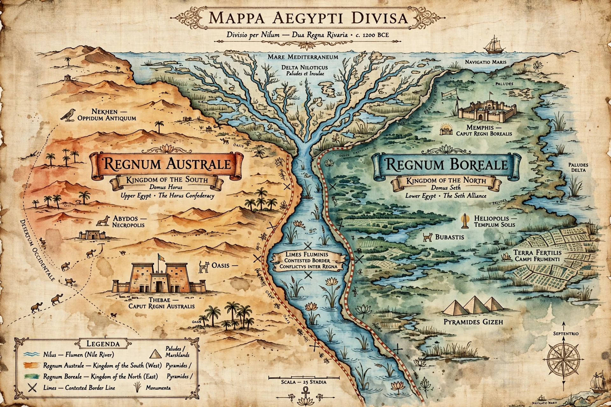

| Third Intermediate Period | |
|---|---|
| Dates | c. 1077–664 BC |
| Preceded by | New Kingdom |
| Followed by | Late Period (26th Dynasty) |
| Dynasties | 21st–25th |
| Capitals | Tanis, Thebes, Bubastis, Sais, Napata/Memphis |

The Third Intermediate Period of ancient Egypt began with the death of Pharaoh Ramesses XI in 1077 BC and the end of the New Kingdom, and lasted until the founding of the Twenty-sixth Dynasty in 664 BC. It was a period of political fragmentation and decline, during which Egypt was often divided between rival rulers and increasingly influenced by peoples of Libyan and Kushite origin.
After 1077 BC Egypt split in two: the Twenty-first Dynasty ruled Lower Egypt from Tanis, while the High Priests of Amun governed Upper Egypt from Thebes. Around 943 BC Shoshenq I, a chief of the Libyan Meshwesh, founded the Twenty-second Dynasty and briefly reunified the country; his campaign in the Levant is recorded both in the Bible and on the Bubastite Portal at Karnak. The dynasty ruled from Bubastis but never fully controlled the Theban priesthood.
By the late 8th century BC Egypt had splintered into numerous local kingdoms. The Twenty-third Dynasty ruled from Leontopolis while rival Libyan chiefs held Herakleopolis and Hermopolis, and Tefnakht of Sais founded the short-lived Twenty-fourth Dynasty in the western Delta. This patchwork of competing rulers — sometimes called the Libyan period — invited intervention from the rising power of Kush in the south.
Piye of Napata conquered Egypt around 727 BC, and his successors Shabaka and Taharqa reunified the country as the Twenty-fifth Dynasty, ruling an empire from Sudan to the Mediterranean. Their rule revived Egyptian art and pyramid building but brought Egypt into conflict with the Neo-Assyrian Empire. Assyrian invasions under Esarhaddon (671 BC) and Ashurbanipal, culminating in the sack of Thebes in 663 BC, ended Kushite rule. Psamtik I of Sais then reunified Egypt, founding the Twenty-sixth Dynasty and the Late Period.